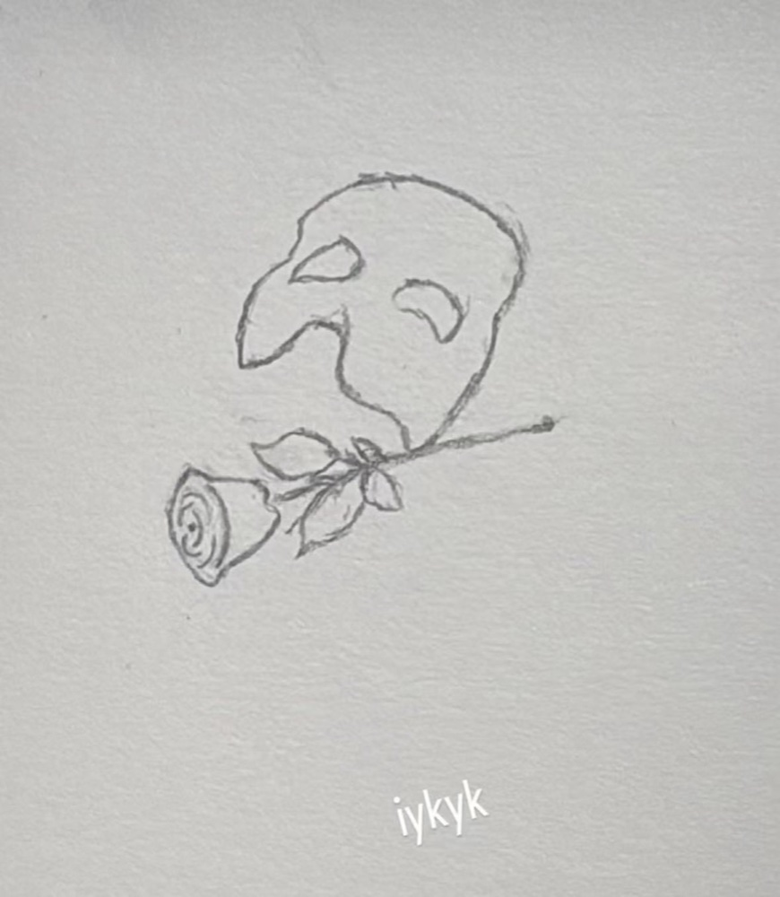
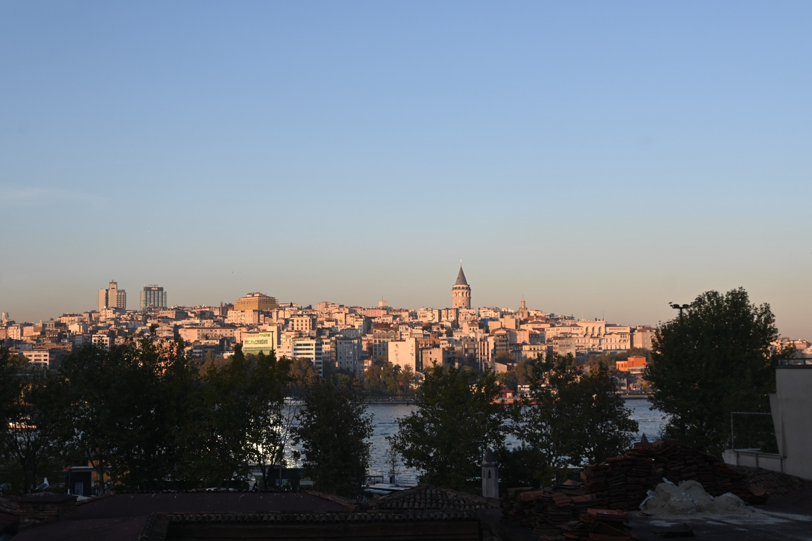
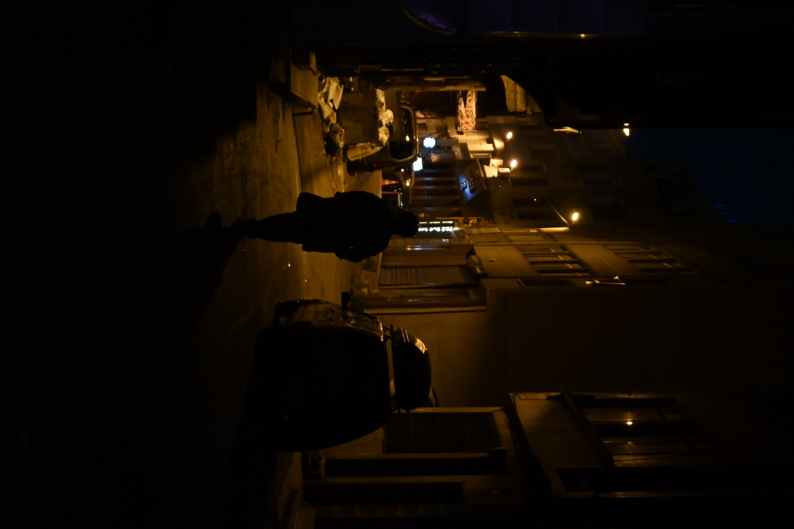

Outside research
Musicals, photography, climbing, singing and songwriting, and games.
Musicals
I love musicals. Two I love are Stephen Sondheim's Sunday in the Park with George, a musical built around Georges Seurat's painting A Sunday Afternoon on the Island of La Grande Jatte, and The Phantom of the Opera.



Photography
Photographs from Istanbul, shot on a Nikon Z fc: from Hagia Sophia and the Blue Mosque through the streets, and the skyline at golden hour, blue hour, and after dark.






Climbing
I founded the MBZUAI Climbing Club and serve as its president. It has 50+ students, and I organize trips, community events, and activities, from venues and scheduling to safety and budget.
Singing and songwriting
I sing and write songs, and I'm drawn to the performing arts more broadly.
Games
I play Stardew Valley, Elden Ring, Cities: Skylines, Cyberpunk 2077, and more. The screenshots here are official store images.